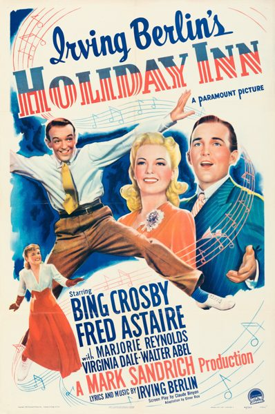

Holiday Inn
Starring: Bing Crosby, Fred Astaire, Walter Abel
Director: Mark Sandrich
Writer: Bing Crosby, Fred Astaire, Elmer Rice
Producer: Mark Sandrich
Studio: Paramount Pictures
Holiday Inn is a 1942 American Christmas musical comedy-drama film starring Bing Crosby and Fred Astaire, with Marjorie Reynolds, Virginia Dale, and Walter Abel. It was directed by Mark Sandrich with music by Irving Berlin.
Trivia
- Nominated for: Academy Award for Best Story; Academy Award for Best Original Musical Score.
- In May 1940, Irving Berlin signed an exclusive contract with Paramount Pictures to write songs for a musical film based on his idea of an inn that opened only on public holidays.
- Bing Crosby and Fred Astaire were the stars of Holiday Inn with support from Marjorie Reynolds and Virginia Dale.
- Produced and directed by Mark Sandrich, Holiday Inn had its premiere at the Paramount Theatre in New York City on August 4, 1942.
Previous Showings
9 Runs • 4 Festivals
6,718 tickets sold
Original Billings: 1 run (September 13, 1942)
Original Run: September 13, 1942 (Sunday - Wednesday)
All runs on record (9):
- September 13, 1942 (Sunday - Wednesday)Bing Crosby, Fred Astaire
- July 16, 1987 · 0 ticketsw/ Blue Skies
- November 22 - 24, 1990 · 1,748 ticketsw/ The Mark of Zorro (1940)
- January 27 - 29, 1993 · 753 ticketsw/ Broadway Melody of 1940
- January 7 - 9, 2005 · 645 ticketsw/ The Sky's the Limit
- December 17 - 18, 2005 · 948 ticketsFall2005w/ Cover Girl
- August 18 - 20, 2010 · 612 ticketsSummer 2010w/ Easter Parade
- June 7 - 8, 2014 · 728 ticketsFred Astairew/ Three Little Words
- November 28 - 30, 2014 · 1,284 ticketsNovember–December 2014, plus The Ten Commandmentsw/ Christmas in July